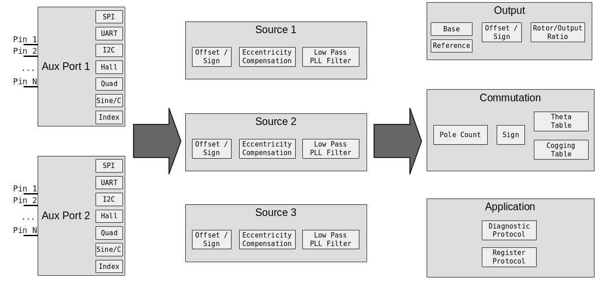

Encoder Configuration Reference¶
This page contains detailed technical reference for advanced encoder configuration.
Overview¶
moteus includes an onboard on-axis magnetic encoder and supports a number of options for using external encoders. To understand how to use them, we first need to know the two things that moteus needs encoders for:
- Commutation: moteus needs to know the electrical relationship between the stator and the rotor in order to apply torque.
- Output: moteus needs to know the position and velocity of the output shaft in order to follow commanded trajectories.
By default, the onboard magnetic encoder (AS5047P) is assumed to sense the rotor. It is also used as the source for position and velocity of the output constrained by a configurable reduction ratio.
Configuration is performed in 3 stages: first is the auxiliary port configuration, second is encoder source configuration, and finally is the output configuration.

Supported Encoders¶
The following encoders are currently supported by moteus:
| Name | Interface Method | Performance | Mounting | Price |
|---|---|---|---|---|
| Onboard AS5047P | SPI (integrated) | +++ | on-axis | Included |
| AS5047x | SPI | +++ | on-axis | $ |
| AS5048B | I2C | ++ | on-axis | $ |
| AS5600 | I2C | + | on-axis | $ |
| AksIM-2 | RS422 w/ 5V | +++++ | off-axis | $$$ |
| CUI AMT21x | RS422 w/ 5V | ++++ | shaft | $$ |
| CUI AMT22x | SPI w/ 5V | ++++ | shaft | $$ |
| MA600 | SPI | ++++ | on/off-axis | $ |
| MA732 | SPI | +++ | on/off-axis | $ |
| iC-PZ | SPI w/ 5V | +++++ | off-axis | $$$ |
| Quadrature | Quadrature | variable | x | x |
| Sine/Cosine | Sine/Cosine | + | x | x |
| Hall effect | Hall effect | x | $ |
Auxiliary Port¶
There are two auxiliary ports on moteus, each with pins that can be used for various functions.
They can provide power to external devices in addition to I/O pins:
| 3V | 5V | 12V | |
|---|---|---|---|
| moteus-r4.5 | 50mA | N/A | N/A |
| moteus-r4.8-4.11 | 100mA | N/A | N/A |
| moteus-c1 | 50mA | 100mA | N/A |
| moteus-n1 | 100mA | 200mA | N/A |
| moteus-x1 | 100mA | 200mA | 150mA |
I/O Pin capabilities¶
- Con: The pin number on the connector
- Aux: The number used to configure the pin in
aux?.pins.X - SPI: Serial peripheral interface support
- ADC/Sin/Cos: Supports analog input, and sine/cosine input
- I2C: Inter-integrated circuit protocol
- HW Quad/PWM: Supports "hardware" quadrature input and PWM output
r4.11 Pins (AUX1/ENC)¶
| moteus r4.5/8/11 | Con | Aux | SPI | ADC/Sin/Cos | I2C | HW Quad/PWM | UART | 5VT |
|---|---|---|---|---|---|---|---|---|
| 3.3V (3) | 1 | |||||||
| C | 2 | 0 | X | X | ||||
| GND (G) | 3 | |||||||
| K | 4 | 1 | CLK | X | ||||
| I | 5 | 2 | MISO | X | ||||
| O | 6 | 3 | MOSI | X |
r4.11 Pins (AUX2/ABS)¶
| moteus r4.5/8/11 | Con | Aux | SPI | ADC/Sin/Cos | I2C | HW Quad/PWM | UART | 5VT |
|---|---|---|---|---|---|---|---|---|
| 3.3V (3) | 1 | |||||||
| 2 | 0 | SCL | RX | X | ||||
| 3 | 1 | SDA | TX | X | ||||
| GND (G) | 4 | |||||||
| DBG 1 | 2 | X | ||||||
| DBG 2 | 3 | X |
Note: For moteus r4.5/8/11, DBG 1/2 are not present on the ABS connector, but are exposed pads on the circuit board.
c1 Pins¶
The moteus-c1 has limited AUX1 port availability. Only pins D and E from AUX1 are exposed on an unpopulated 0.05" through-hole land pattern. I2C pullups are not available on moteus-c1 for aux1.
| moteus c1 | Con | AUX | SPI | ADC/Sin/Cos | I2C | HW Quad/PWM | UART | 5VT |
|---|---|---|---|---|---|---|---|---|
| D | 3 | SCL | 2.1 | RX | X | |||
| E | 4 | SDA | 2.2 | TX | X |
n1/x1 Pins (AUX1/ENC)¶
| moteus n1/x1 | Con | AUX | SPI | ADC/Sin/Cos | I2C | HW Quad/PWM | UART | 5VT |
|---|---|---|---|---|---|---|---|---|
| 5V (5) | 1 | |||||||
| 3.3V (3) | 2 | |||||||
| A | 3 | 0 | CLK | X | ||||
| B * | 4 | 1 | MISO | 3.1 | RX | |||
| C | 5 | 2 | MOSI | X | 3.2 | |||
| D | 6 | 3 | SCL | 2.1 | RX | X | ||
| E | 7 | 4 | SDA | 2.2 | TX | X | ||
| GND (G) | 8 |
Note: For moteus n1, the B pin software configured pullup cannot be used effectively. Thus the B pin is unsuitable for open-drain inputs like hall effect sensors unless external pullups are provided.
Note: The moteus n1 and x1 have a hardware RS422 transceiver connected to aux1's pins D and E which can be enabled through configuration. RS485 devices like the CUI AMT21x can be used if the RS422 pin Y is connected to A and RS422 pin Z is connected to B.
c1/n1/x1 Pins (AUX2/ABS)¶
| moteus n1/x1 | Con | AUX | SPI | ADC/Sin/Cos | I2C | HW Quad/PWM | UART | 5VT |
|---|---|---|---|---|---|---|---|---|
| 5V (5) | 1 | |||||||
| 3.3V (3) | 2 | |||||||
| A | 3 | 0 | CLK | X | X | |||
| B | 4 | 1 | MISO | X | SDA | RX | X | |
| C | 5 | 2 | MOSI | X | SCL | 4.1 | TX | X |
| D | 6 | 3 | 4.2 | RX | X | |||
| GND (G) | 7 |
Pin Capabilities¶
The following capabilities can be used. Some are supported on any pins, others only on select pins.
Software Quadrature Input¶
Pins: any
The software quadrature feature uses GPIO pins to read incremental quadrature encoders. It is capable of counting at 200,000 counts per second without error, but incurs processor overhead that increases with count rate. Higher overhead means the latency to respond to CAN messages increases.
Hall sensor¶
Pins: any
3 hall sensor inputs are required. For many hall sensors, the pullup must be configured for the auxiliary port pin in question.
When using hall effect sensors as the commutation source, calibration
with moteus_tool requires the --cal-hall option be passed.
Index¶
Pins: any
This is a single pin that is high when the encoder is in a known location. It can be fed from the "I" signal of an ABI output, or a dedicated homing sensor.
GPIO Input¶
Pins: any
Any pin may be designated as a GPIO input. Its value may be read over the diagnostic or register protocols.
I2C Master¶
Pins: select
Between 1 and 3 I2C devices may be periodically polled at rates up to 200Hz. The associated pins on moteus r4.5/8/11 have permanently configured 2kohm pullup resistors.
SPI Master¶
Pins: select
A variety of SPI based peripherals are supported. This mode is also used for the onboard encoder, which when enabled, claims the CLK, MOSI, and MISO pins on auxiliary port 1.
Hardware Quadrature Input¶
Pins: select
Hardware quadrature pins use microcontroller peripherals to process quadrature input at any speed with no processor overhead.
Sine/cosine¶
Pins: select
Analog sine/cosine inputs are supported with a configurable common mode voltage.
Analog input¶
Pins: select
Arbitary analog inputs can be read either over the diagnostic or register protocol.
UART¶
Pins: select
A variety of asynchronous serial encoders and debugging facilities are supported.
The moteus-n1 and moteus-x1 additionally have a hardware RS422 transceiver connected to aux1's pins D and E which can be enabled through configuration. RS485 devices like the CUI AMT21x can be used if the RS422 pin Y is connected to A and RS422 pin Z is connected to B.
Pin Configuration¶
Auxiliary port configuration is achieved in two steps. First, the
aux[12].pins.X.mode value is set to the proper capability for each
pin. aux[12].pins.X.pull can be used to configure an optional
pullup or pulldown for some modes. Second, the corresponding
capabilities must be configured in one of the capability specific
sections of aux[12]. For instance, for each auxiliary port, the SPI
configuration in aux[12].spi has a mode to select what the slave
device is and a rate_hz to define the frequency of the SPI
peripheral.
For I2C ports, up to 3 different slave devices may be configured, in
each of aux[12].i2c.devices.[012].
The diagnostic values in aux[12] can be used to monitor for errors
from mis-configuration or mis-operation.
Source Configuration¶
Once the auxiliary ports have been configured, next encoder sources
should be configured in motor_position.sources. Up to 3 sources may
be configured, with the available types roughly corresponding to the
categories available from the auxiliary ports. Typically, source 0 is
used for the sensor that is used for commutation.
For each source motor_position.sources.[012].aux_number should be
either "1" or "2", to select which auxiliary port the sensor should be
read from. motor_position.sources.[012].type selects the type of
sensor. For I2C based sources,
motor_position.sources.[012].i2c_device selects which I2C device
on that auxiliary port is used.
For sources that are incremental only, like quadrature, a source level
index may be configured in
motor_position.sources.[012].incremental_index. This should be used
if the incremental source is needed to provide position for
commutation.
Each source can be marked as measuring the rotor or the output in
motor_position.sources.[012].reference.
Each source has configuration that determines how to map the raw value
provided by the device into a rotary angle. cpr is the number of
counts per revolution, offset provides an integral count offset, and
sign can be used to invert the reading. The final reading is
(raw + offset) * sign / cpr.
Finally, each source has a configurable low pass filter, with cutoff
frequency set by motor_position.sources.[012].pll_filter_hz. It may
be set to 0 to disable the filter. If disabled no velocity will be
interpolated on sensors that do not provide it natively.
Output Configuration¶
The third major stage controls how the sources are used by the motor controller. Some source selections may be left at -1, which disables that feature.
motor_position.commutation_source selects which source is used to
provide rotor position for commutation purposes. It is typically left
at source 0 and is required. Note, quadrature sources are not
recommended for commutation as they can lose counts and require
additional application level homing support on each power-on.
motor_position.output.source selects which source is used to provide
output position and velocity and is required.
motor_position.output.offset and motor_position.output.sign are
used to transform the output position to achieve a given zero point
and rotational direction.
motor_position.output.reference_source optionally configures a
source that is used solely to disambiguate the output position at
startup. It could be a low-rate I2C based sensor for instance, or an
index source configured from a homing switch.
Finally, motor_position.rotor_to_output_ratio defines the number of
turns of the output for one turn of the rotor. This is used to map
the readings from sensors that are defined relative to one into the
other. For gear reducers (almost all configurations), this will be
less than one. For example, a 4x gear reduction would be entered as
0.25.